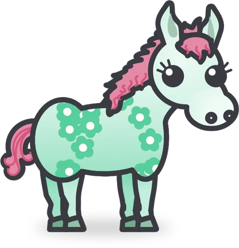
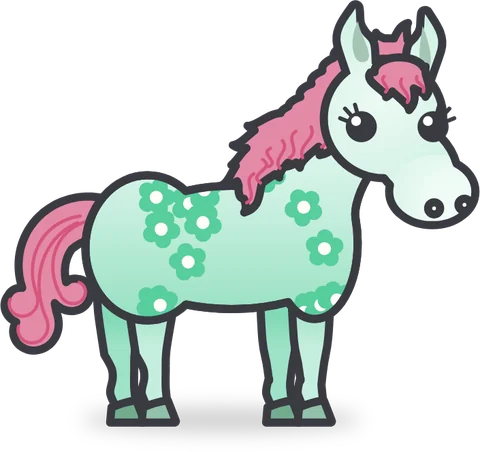
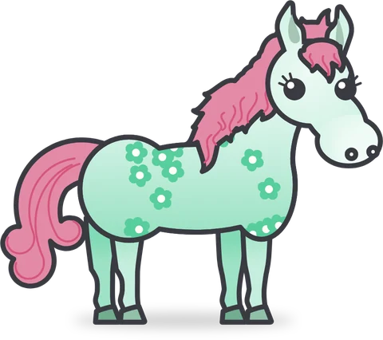
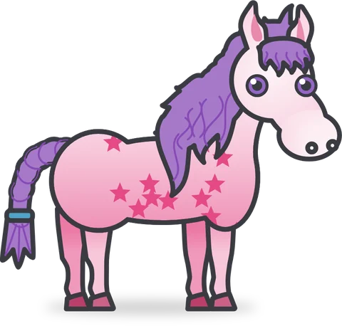
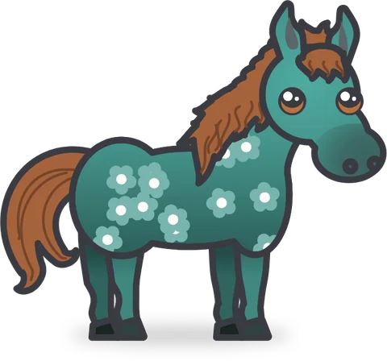
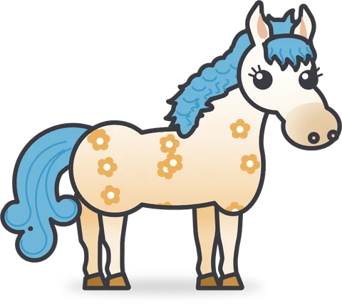
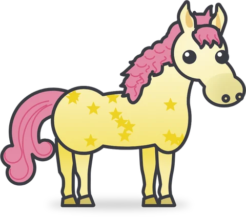
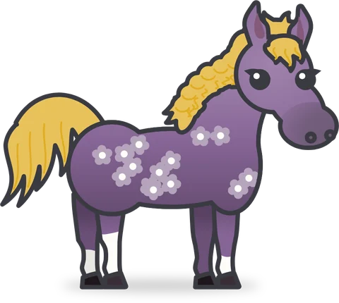
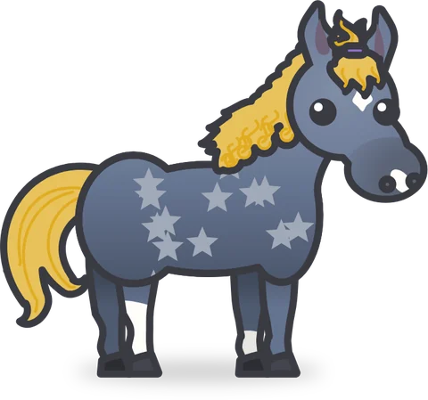
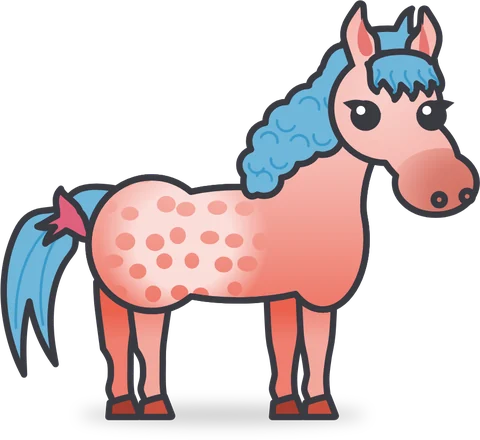

Con Pocket Stable hai sempre una piccola scuderia in tasca. Ogni pony che accogli è unico: il suo mantello e i suoi disegni, la criniera e la coda, gli occhi e il nome sono diversi da quelli di ogni altro.
I tuoi pony non si fermano mai, nemmeno quando non ci sei. Hanno fame mentre sei via, si addormentano di notte e sono felici di rivederti quando torni.
Prenditi cura di loro
- Dagli le carote quando hanno fame, ma senza esagerare… un pony che mangia troppo potrebbe non restare un pony a lungo!
- Lavali, raccogli quando sporcano e accarezzali finché non sono felici.
- Accertati di come stanno: il tuo pony riuscirà a fartelo capire, a modo suo.
- Una notifica ti avvisa quando qualcuno comincia ad avere fame (ma solo durante il giorno).
- Il primo giorno Sofia ti mostra la scuderia e ti aiuta a muovere i primi passi.
Guardali crescere
- Ogni pony nasce puledrino, diventa puledro e poi adulto.
- Nel paddock il giorno lascia il posto alla notte, e ogni pony va a dormire la sera quando è stanco.

Puledrino
Puledro
Adulto
Ingrandisci la tua scuderia
Più i tuoi pony stanno bene, più la scuderia prospera: sali di grado, festeggia ogni livello e conquista nuovi box per altri pony.







Ogni pony è unico
Un legame vero
I tuoi pony dipendono da te. Se ne dimentichi uno troppo a lungo, lascerà la scuderia: passa a trovarli spesso, anche solo per una carezza.